Archiv · Ersatzteillager
Ersatzteillager
Was einen Roboter in Bolt Buddies stark macht: vier Attribute, drei Ausrüstungsplätze, Module für eine Expedition, Vorräte aus dem Shop und eine gut ausgebaute Werkstatt. Alle Bilder stammen direkt aus dem Spiel.
Zu Bits & Bolts gibt es auf dieser Seite nichts.
Zu Geplante Spiele gibt es auf dieser Seite nichts.
Attribute
| Attribut | Wirkt auf | Soll später kommen aus |
|---|---|---|
| Leistung | mehr Schaden | Port Patrol |
| Takt | öfter dran, weicht aus | Loop Echo |
| Logik | mehr Volltreffer | Bits & Bolts |
| Gehäuse | mehr Leben | Tilt Gate |
Ausrüstung
Jeder Roboter hat drei Plätze: Waffe, Rüstung und Chip. Teile gibt es im Schacht, aus Kisten im Shop und als Belohnung im Tagesschacht. Überzählige Teile lassen sich verkaufen oder an der Werkbank zerlegen.
Waffe
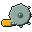
Kreissäge
Waffe
hebt Leistung
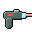
Laser
Waffe
hebt Leistung, Logik
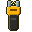
Taser
Waffe
hebt Leistung, Takt
Rüstung
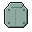
Blechpanzer
Rüstung
hebt Gehäuse
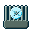
Kühlkörper
Rüstung
hebt Gehäuse, Takt
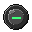
Gummihülle
Rüstung
hebt Gehäuse, Logik
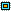
Chip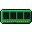
RAM-Riegel
Chip
hebt Logik
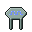
Taktquarz
Chip
hebt Takt
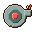
Turbolader
Chip
hebt Leistung, Takt
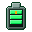
Zusatzakku
Chip
hebt Gehäuse, Logik
Jedes Teil hat eine von vier Seltenheiten. Je seltener, desto mehr Punkte bringt es, und tiefer im Schacht wird es öfter selten:
Schrottsolideseltenlegendär
Module
Nach jedem gewonnenen Kampf darf man eine Belohnung wählen. Ein Modul gilt für das ganze Team bis zum Ende der Expedition, gleiche Module stapeln sich.
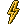
Übertakter
Modul
+15 % Tempo
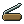
Schleifstein
Modul
+20 % Schaden
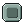
Panzerplatten
Modul
+25 % Leben
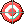
Zielhilfe
Modul
+15 % Volltreffer
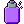
Tarnlack
Modul
+10 % Ausweichen
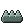
Stacheln
Modul
2 Schaden an Angreifern
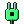
Stromdieb
Modul
heilt sich um 15 % des Schadens
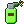
Rostspray
Modul
Getroffene rosten: 2 Schaden je Zug
Dickes Blech
Modul
1 Panzerung
Nanobots
Modul
heilt 2 Leben je Zug
Shop und Vorräte
Im Shop gibt es Vorräte für die Pflege und Kisten mit Ausrüstung. Trainingsdaten und Tresorkisten bleiben auch nach dem vollen Ausbau ein Ziel für Schrauben.
Akku
12 Schrauben
+35 Energie
Ölkanne
10 Schrauben
+40 Pflege, +5 Laune
Schrottkiste
30 Schrauben
ein zufälliges Teil, je tiefer der Rekord, desto besser
Tresorkiste
260 Schrauben
ein Teil, mindestens selten
Trainingsdaten
40 Schrauben, je Stufe 14 mehr
eine halbe Stufe Erfahrung für den gewählten Roboter, bis Stufe 20
Pflege
| Wert | sinkt | steigt durch | Im Kampf |
|---|---|---|---|
| Energie | 1 Punkt in 6 Minuten | Akku (+35), Schlafen | ab 70: +10 % Leben · unter 30: −20 % Leben |
| Laune | 1 Punkt in 5 Minuten, rostig doppelt so schnell | Spielen (+18), Streicheln, Expedition | ab 70: +10 % Volltreffer · unter 30: −20 % Schaden |
| Pflege | 1 Punkt in 8 Minuten | Ölkanne (+40) | ab 70: +10 % Ausweichen · unter 30: −20 % Tempo |
Werte sinken auch, wenn das Spiel zu ist, höchstens für 48 Stunden. Kaputt geht dabei nichts: Ein leerer Roboter schaltet ab und lädt an der Ladeleiste.
Werkstatt-Ausbau
Kommt mit Bolt Buddies 1.0. Jede Station wird für Schrauben in drei Stufen ausgebaut und steht dann sichtbar in der Werkstatt, mit jeder Stufe größer. Sie machen die Pflege leichter, aber nie überflüssig: Auch ganz ausgebaut braucht ein Roboter nach zwei Tagen wieder etwas. Die Bilder zeigen Stufe 3.
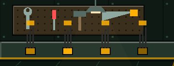
Ladeleiste
60 / 180 / 450 Schrauben
Schlafende laden 35 / 70 / 100 % schneller
Schlafende stehen auf der Leiste, ihr Steckplatz leuchtet. Jede Stufe bringt mehr Kabel.
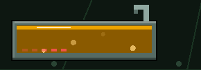
Ölbad
60 / 180 / 450 Schrauben
Pflege sinkt 15 / 30 / 45 % langsamer
Eine Wanne mit schwappendem Öl und Blasen. Auf Stufe 3 glüht eine Heizspirale.
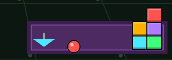
Spielecke
60 / 180 / 450 Schrauben
Laune sinkt 15 / 30 / 45 % langsamer
Ein Teppich mit Bauklötzen, ab Stufe 2 mit Ball, ab Stufe 3 mit Kreisel.
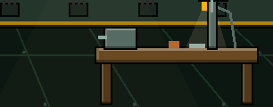
Werkbank
80 / 200 / 450 Schrauben
zerlegen und aufwerten / 25 % / 50 % günstiger
Mit Schraubstock, ab Stufe 2 mit Lampe, ab Stufe 3 mit Bohrmaschine, die Funken sprüht.

Aufzug
250 / 600 Schrauben
2 / 3 Aufträge gleichzeitig
Seitlich an der Aufzugstür leuchtet je Stufe eine grüne Lampe. Nur zwei Stufen.
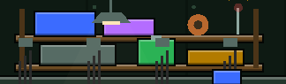
Funkantenne
Geplantkommt später Schrauben
empfängt Post aus den anderen Spielen
Steht auf dem Regal und blinkt, siehe Funkverbindung.
Alles zusammen kostet 3650 Schrauben. Eine Expedition bringt je nach Stufe des Teams etwa 30 bis 290, für die erste Station reichen zwei frühe Expeditionen.
Werkbank
An der Werkbank wird aus altem Kram ein Lieblingsteil. Zerlegen macht aus einem Teil im Lager Schrott. Aufwerten hebt ein Teil eine Seltenheit höher und gibt ihm 2 Punkte dazu, auch wenn es gerade ein Roboter trägt.
| Seltenheit | Schrott beim Zerlegen | Aufwerten zur nächsten |
|---|---|---|
| Schrott | 1 | 20 Schrauben, 3 Schrott |
| solide | 3 | 50 Schrauben, 6 Schrott |
| selten | 5 | 120 Schrauben, 12 Schrott |
| legendär | 7 | geht nicht höher |
Schrauben und Schrott
Schrauben
Währung
Gibt es im Schacht und für verkaufte Teile. Jede Ebene bringt die Hälfte mehr als die darüber, der Nebenschacht noch einmal 75 % mehr.
Schrott
nur an der Werkbank
Entsteht beim Zerlegen und wird zum Aufwerten gebraucht.